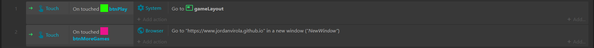
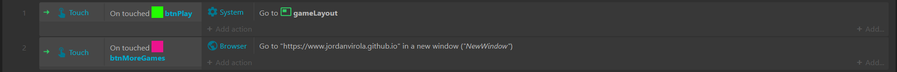

The game was made completely in Construct, everything from the score counting up, and spawning the spikes at random locations. The part that took the longest to code was the spikes spawning in random spots, it was pretty complex, especially since I've never done anything like this in my life. Keeping the player in bounds was a bit of a hassel as well, I wasn't sure how the set X line worked, though, I was able to get it working perfectly fine. Below I've put some pictures of what the code looks like in Construct, the first two images are both code for how the game works, spawning spikes, where they spaw, where the player is supposed to be, how far the player can move to either side of the screen, keeping the score, and some buttons when you lose the game. The third picture is a picture of the code for the main menu, there isn't much there for it

 
